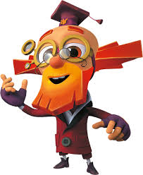
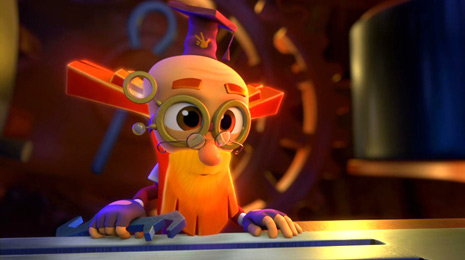
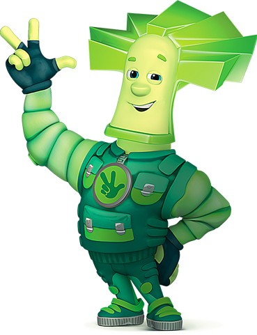

А кто такие фиксики? Большой большой секрет!
Как всем известно, "...они чинят изнутри утюги, моторы, телефоны, мр3, прочие приборы". Задача машинной команды такая же - поддерживать все устройства на борту судна в рабочем состоянии. Я, как электромеханик, отвечаю за всю эелектрическую составляющую. То есть, если к прибору подходит электрический провод, и он не работает - зовут меня. А ещё у нас есть свой Дедус.
Старший механик, второй человек на судне, капитан машинного отделения, называется дедом. 60 лет ему или 30, он всё равно дед. Это прозвище пошло ещё с советского флота. Тогда у многих должностей были такие прозвища. Боцмана, например, называли драконом. Капитана - дядей. Когда я спросил, почему дядей, мне резонно ответили: ну не тётей же)))
Дед осуществляет общее руководство и ведёт переписку с офисом. Ещё он считает топливо и несёт за всё ответственность. То есть, если на бункеровке (заправке парохода горючим) где-нибудь в Лос Анжелесе пару тонн мазута ухнет за борт, так как 3-й механик плохо закрутил болты на шланге - сядет дед. В штатах с этим строго.
Вообще, весь экипаж судна делится на машину и палубу. Есть ещё камбуз, но если судно торговое, то там всего два-три человека: повара и официант. Другое дело на пассажирском флоте, где доля обслуживающего персонала (поваров, барменов, уборщиц,...) иногда больше, чем всего остального экипажа.
Если дед осуществляет общее руководство, то "администратор" в машине - это второй механик. Он каждое утро на разводе раздаёт работу рядовым и обсуждает с остальными механиками и электромехаником, что надо сделать по их заведованиям. Кроме того, второй механик отвечает за работу "сердца" машинного отделения - главного двигателя. Можно сказать, что это Папус.
Ещё в машине есть третий, иногода четвёртый механики. Они отвечают за всякие сепараторы, генераторы, компрессоры, насосы, краны и т.п. Ну и электромеханик - ваш покорный слуга;)
Все эти должности - офицерские. Т.е. люди, которые их занимают отвечают за работоспособность определённых механизмов. Кроме офицеров, в машине есть ещё рядовые: сварщики, токари, мотористы. Они ни за что не отвечают, а лишь выполняют ту работу, которую им дают. Или помогают делать свою работу механикам. Или палубу моют в машине))
На палубе иерархия такая же: главный - капитан, администратор - старший помощник, отвечает за груз. Второй помощник отвечает за навигацию и медицину, третий - за безопасность и портоую бюрократию. Рядовые, матросы с боцманом во главе, оббивают ржавчину, красят палубу и тягают концы на швартовке. То есть, привязывают судно к причалу большими такими канатами, на время стоянки в порту.
Вот и получается, что судно идёт из одного порта в другой потому, что внутри него маленькие трудолюбивые человечки следят чтобы всё крутилось и пыхало как надо. "Трыц-тыц пароходик, и все фиксики внутри!"